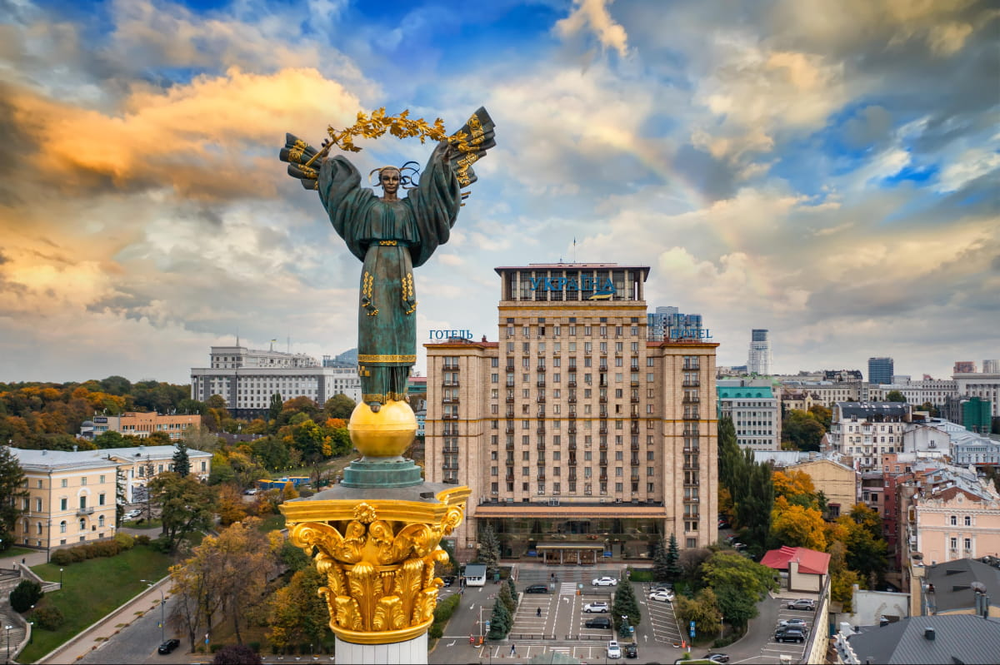

Місце народження: 16 травня, 2005 року, м. Острог
Освіта: ЗОШ №1, м. Острог; НТУУ "КПІ", м. Київ
Київ — це столиця та найбільше місто України, відоме своєю багатою історією, мальовничими краєвидами та значущістю для культурного і духовного життя країни. Засноване більше ніж півтори тисячі років тому, місто несе в собі сліди різних історичних епох, які відображаються у його архітектурі та пам'ятках.
Однією з найвідоміших пам'яток Києва є Софійський собор, що внесений до списку Світової спадщини ЮНЕСКО. Його золоті куполи і старовинні фрески приваблюють як туристів, так і жителів міста. Поруч розташована Києво-Печерська лавра — старовинний монастирський комплекс, який є важливим духовним осередком.
Хрещатик, головна вулиця міста, вражає своїм широким проспектом та архітектурою радянської епохи, а Майдан Незалежності, центральна площа Києва, відома як символ свободи та місце, де відбувалися визначні події в новітній історії України.
Київ також славиться своїми зеленими зонами та парками, такими як Маріїнський парк та Ботанічний сад імені Гришка. Вони пропонують спокійні місця для прогулянок та насолоди природою. Окрім цього, місто розташоване на берегах Дніпра, що надає йому додаткового шарму завдяки мальовничим набережним та пляжам.
Завдяки своїй багатогранній культурі, Київ приваблює численних відвідувачів сучасними музеями, театрами та концертними залами. Місто відоме своїми ресторанними традиціями та популярними закладами, де можна спробувати як українську, так і міжнародну кухню.
